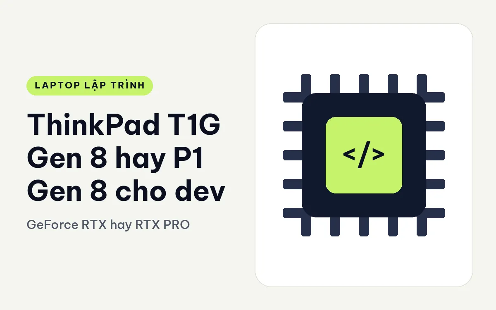
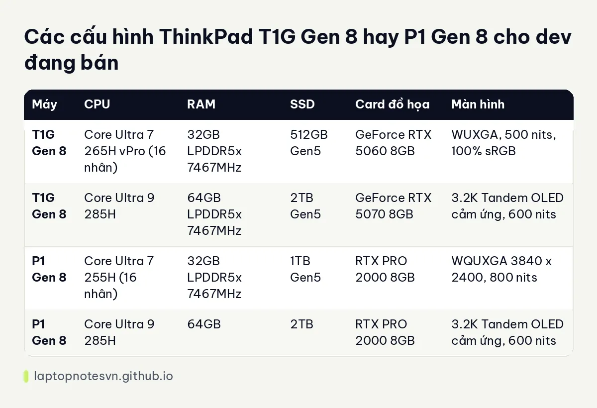

ThinkPad T1G Gen 8 hay P1 Gen 8 cho dev - GeForce RTX hay RTX PRO

Lenovo có hai ThinkPad 16 inch đời Gen 8 cho người cần card đồ họa rời, dùng cùng kiểu bàn phím và thân mỏng. T1G dùng card GeForce RTX, hướng tới người dùng đa dụng. P1 dùng card RTX PRO, hướng tới người dùng chuyên nghiệp. Với dev, việc phân biệt hai máy thường rơi vào câu hỏi: tôi có cần phần mềm kỹ thuật được chứng nhận hay không.
Máy đa dụng là ThinkPad T1G Gen 8.
Máy trạm là ThinkPad P1 Gen 8.
Mang đi làm thì máy nào gọn hơn
T1G Gen 8 nặng 1,84 kg, pin 90Wh, có SSD và loa dạng CRU (tự thay), hỗ trợ tới 4 màn hình. Dữ liệu P1 Gen 8 trong tay tôi không ghi cân nặng và pin, nên bài này không so hai chỉ số đó; hãy xem trang sản phẩm của P1 nếu cần.
Cả hai máy dùng RAM LPDDR5x tốc độ 7467MHz theo dữ liệu, SSD chuẩn Gen5, màn 16 inch. Sự giống nhau này cho thấy chúng được thiết kế cùng một nền tảng, khác nhau ở card đồ họa và vài chi tiết cấu hình.
Cấu hình ThinkPad T1G Gen 8 so với P1 Gen 8
| Máy | CPU | RAM | SSD | Card đồ họa | Màn hình |
|---|---|---|---|---|---|
| T1G Gen 8 | Core Ultra 7 265H vPro (16 nhân) | 32GB LPDDR5x 7467MHz | 512GB Gen5 | GeForce RTX 5060 8GB | WUXGA, 500 nits, 100% sRGB |
| T1G Gen 8 | Core Ultra 9 285H | 64GB LPDDR5x 7467MHz | 2TB Gen5 | GeForce RTX 5070 8GB | 3.2K Tandem OLED cảm ứng, 600 nits |
| P1 Gen 8 | Core Ultra 7 255H (16 nhân) | 32GB LPDDR5x 7467MHz | 1TB Gen5 | RTX PRO 2000 8GB | WQUXGA 3840 x 2400, 800 nits |
| P1 Gen 8 | Core Ultra 9 285H | 64GB | 2TB | RTX PRO 2000 8GB | 3.2K Tandem OLED cảm ứng, 600 nits |
Điểm đáng thấy là cả hai máy đều có bản đầu và bản cao. Bản cao của hai máy gần giống nhau: Core Ultra 9 285H, 64GB RAM, SSD 2TB, màn 3.2K Tandem OLED. Khác biệt là card: GeForce RTX 5070 ở T1G, RTX PRO 2000 ở P1. Hai card cùng 8GB VRAM nhưng thuộc hai dòng khác nhau.

Bản đầu thì khác hơn: T1G dùng Ultra 7 265H, SSD 512GB, màn WUXGA; P1 dùng Ultra 7 255H, SSD 1TB, màn WQUXGA 4K sáng 800 nits. Nếu bạn muốn màn 4K sáng, đó là bản P1.
Về dung lượng RAM, hãy xem bài lập trình viên cần bao nhiêu RAM. Cả hai bản cao đều 64GB nên thoải mái cho Docker và máy ảo.
Web, mobile hay backend thì nghiêng về máy nào
- Dev AI, CUDA, game engine: T1G với GeForce, hệ sinh thái quen thuộc với người làm game.
- Dev dùng phần mềm kỹ thuật, CAD, mô phỏng cần chứng nhận: P1 với RTX PRO.
- Dev thích màn 4K sáng 800 nits: bản đầu của P1.
- Dev thích OLED: bản cao của cả hai máy.
- Dev web, backend thuần: cả hai đều dư sức, nên cân nhắc máy nhẹ hơn.
GeForce và RTX PRO khác nhau thế nào
GeForce hướng tới game và sáng tạo nội dung phổ thông, RTX PRO hướng tới phần mềm chuyên nghiệp với driver được hãng phần mềm kiểm định. Trong công việc lập trình, nếu bạn không dùng phần mềm đòi chứng nhận, hai dòng chạy mã CUDA hay huấn luyện mô hình nhỏ đều hoạt động. Việc chọn thường quy về ngân sách và thói quen của nhóm làm việc.
Một điểm cần lưu ý: dữ liệu ghi cả hai card 8GB VRAM ở các bản này, nên với mô hình lớn cả hai đều có giới hạn. Nếu cần VRAM lớn hơn, bạn nên nhìn sang các máy trạm có card 12GB hoặc 16GB như dòng P16.
RAM, SSD và đường sửa chữa
Cả hai máy dùng RAM LPDDR5x 7467MHz và SSD Gen5, nghĩa là tốc độ đọc ghi rất cao so với thế hệ trước. Với dev, SSD nhanh rút ngắn thời gian mở dự án lớn, cài thư viện và kéo image. T1G còn cho phép tự thay SSD và loa, dữ liệu P1 trong tay tôi không nêu điều này nên bạn cần hỏi cửa hàng nếu quan tâm.
Về dung lượng, bản 32GB đủ cho đa số công việc, nhưng nếu bạn chạy máy ảo, container nặng và IDE cùng lúc, bản 64GB thoải mái hơn nhiều. Khoảng chênh giá giữa 32GB và 64GB thường lớn, vì thế hãy cân nhắc xem bạn có thực sự dùng hết không.
Đừng quên rằng bản cao có SSD 2TB. Nếu bạn lưu nhiều dataset hoặc mô hình, đây là cấu hình đáng chọn. Nếu chỉ code, 512GB đến 1TB là đủ.
Cuối cùng, nhớ rằng cả hai máy đều thuộc loại 16 inch mỏng, tức là không nhẹ. Hãy tự hỏi mình có thực sự cần mang máy này đi mỗi ngày không.
Khi nào lấy ThinkPad T1G Gen 8, khi nào lấy P1 Gen 8
Chọn T1G Gen 8 nếu bạn là dev đa dụng, muốn GeForce, tự thay SSD và loa và dùng nhiều màn ngoài. Ghi chú riêng ở T1G Gen 8 cho lập trình.
Chọn P1 Gen 8 nếu bạn cần RTX PRO, hoặc bản màn 4K 800 nits. Xem bài P1 Gen 8 cho lập trình cho góc nhìn riêng.
Câu hỏi quyết định rất ngắn: phần mềm của bạn có đòi card được chứng nhận không. Nếu không, T1G thường là lựa chọn linh hoạt hơn.
Đăng ngày 09/11/2026